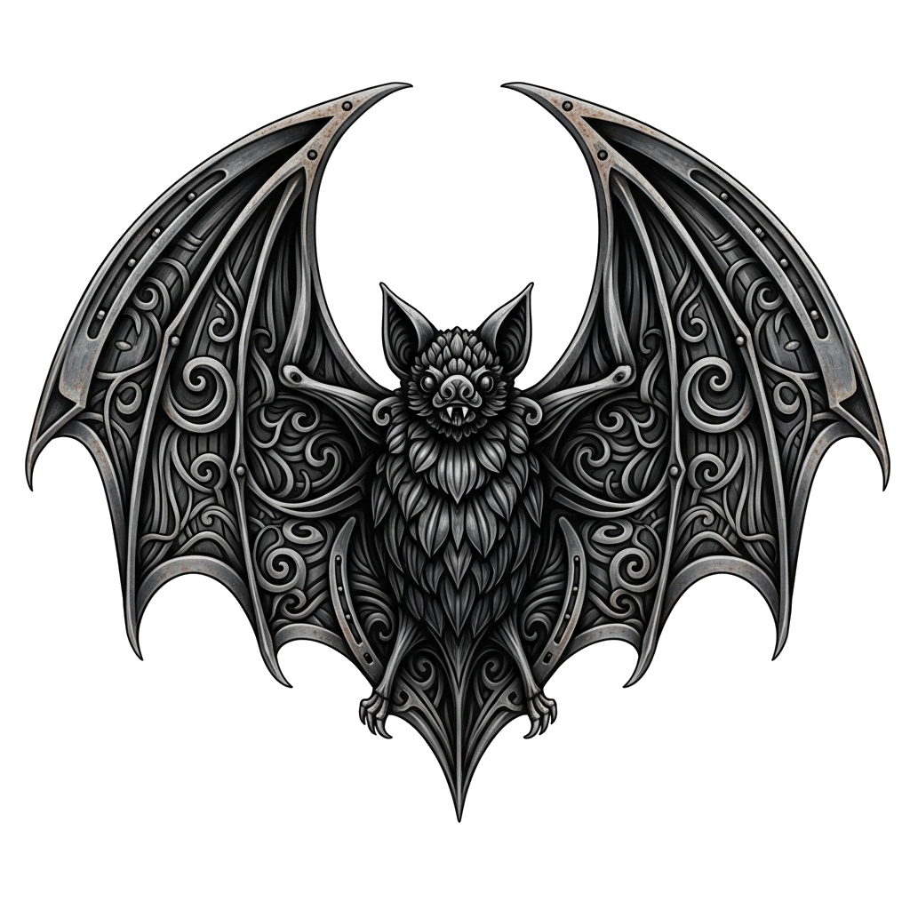
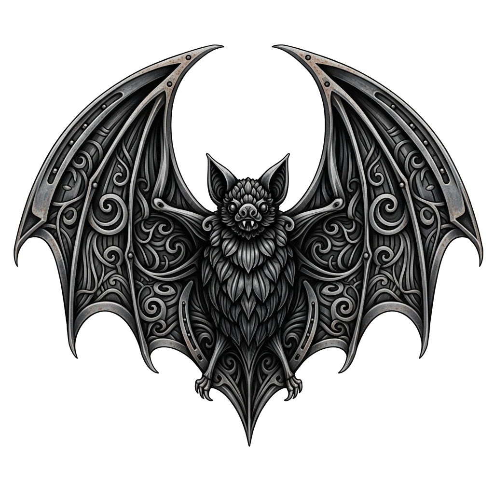

La Historia del Mito Vampírico

Un recorrido por la evolución y el simbolismo de los vampiros, desde sus orígenes en el folklore hasta su impacto en la cultura contemporánea.
 Entrar al Sitio
Un recorrido por la evolución y el simbolismo de los vampiros, desde sus orígenes en el folklore hasta su impacto en la cultura contemporánea.
 Entrar al Sitio